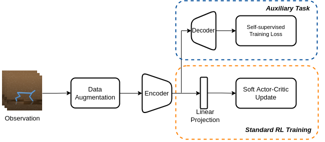
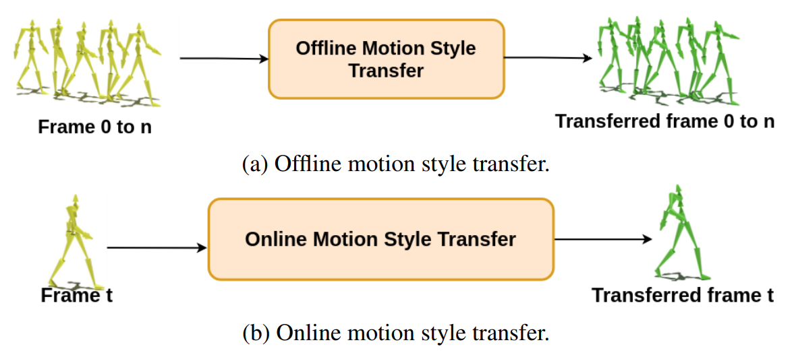
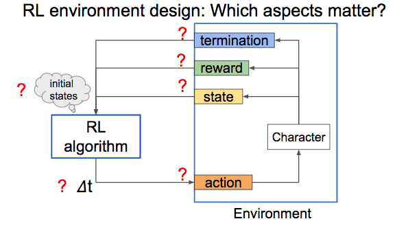
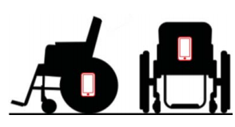

|
Tianxin Tao
I am a Master student in computer science at University of British Columbia supervised by Prof. Michiel van de Panne, where I work on character animation and reinforcement learning.
I previously interned at Huawei 2012 Lab working on motion style transfer. I am broadly interested in computer graphics, machine learning and robotics.
In my spare time, I enjoy riding mountain bikes and skiing.
Email /
CV /
Github
|
|
|

|
Evaluating Vision Transformer Methods for Deep Reinforcement Learning from Pixels
Tianxin Tao*, Daniele Reda*, Michiel van de Panne (*: equal contribution)
Under Review
pdf
|
|

|
Style‐ERD: Responsive and Coherent Online Motion Style Transfer
Tianxin Tao, Xiaohang Zhan, Zhongquan Chen, Michiel van de Panne
IEEE Conference on Computer Vision and Pattern Recognition (CVPR), 2022
project page
|
|

|
Learning to Locomote: Understanding How Environment Design Matters for Deep Reinforcement Learning
Daniele Reda*, Tianxin Tao*, Michiel van de Panne (*: equal contribution)
ACM SIGGRAPH Motion, Interaction and Games (MIG 2020)
project page / arxiv / video
|
|

|
Towards the Development of a Learning-Based Intention Detection Framework for Pushrim-Activated Power-Assisted Wheelchairs
Mahsa Khalili, Tianxin Tao, Ruolan Ye, Shuyong Xie, Huancheng Yang, H.F. Machiel Van der Loos, Jaimie Borisoff
2019 IEEE-RAS-EMBS International Conference on Rehabilitation Robotics (ICORR)
pdf
|
Teaching Assistant:
-
CPSC 314: Computer Graphics (2019 Term 1, 2020 Term 1)
-
CPSC 425: Computer Vision (2019 Term 2)
-
CPSC 121: Models of Computation (2019 Summer)
-
Graduate Teaching Assistant Award
-
Faculty of Applied Science International Student Scholarship
-
Elizabeth and Leslie GOULD Scholarship in Engineering
-
The Trek Excellence Scholarship
|